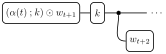
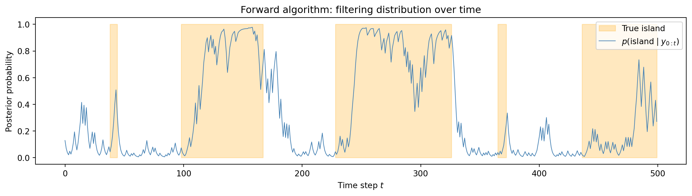

import pandas as pd
# Load training data
cpg_train_df = pd.read_csv("../data/exercise-3/cpg_train.csv")
cpg_train_df.head()| position | nucleotide | state | |
|---|---|---|---|
| 0 | 0 | A | non-island |
| 1 | 1 | G | non-island |
| 2 | 2 | A | non-island |
| 3 | 3 | G | non-island |
| 4 | 4 | T | non-island |
\[ \def\then{\mathbin{;}} \def\kernel{\rightsquigarrow} \def\swap{\mathsf{swap}} \def\id{\mathsf{id}} \def\cp{\mathsf{copy}} \def\del{\mathsf{del}} \def\ivmark#1{[\![#1]\!]} \]
This exercise uses three Python libraries:
If any of these are not installed, run pip install pandas torch matplotlib in your terminal.
In Exercises 1 and 2, we approximated posteriors by sampling. Here, we compute them exactly. We will derive the classical forward algorithm by systematically parsing the HMM string diagram from left to right. The algorithm emerges directly from the kernel composition rules; there is no need to prove that it is correct. This is a powerful example of how the diagrammatic language can guide us to the right algorithm.
The tasks below are stated in general terms. Choose one of the following two applications to work with throughout the exercise. Both involve a 2-state hidden Markov model — the only difference is what the states and observations represent.
The setting. In the human genome, the dinucleotide CG (called “CpG”) is relatively rare — most cytosines in a CG context are chemically modified (methylated) and tend to mutate over evolutionary time. However, certain regions called CpG islands resist this modification and retain a high frequency of C and G nucleotides. CpG islands are biologically important: they are found near roughly 70% of human gene promoters and play a key role in gene regulation.
Detecting CpG islands from raw DNA sequence is a classic application of HMMs in bioinformatics (see e.g. Durbin et al. (1998)). The hidden state indicates whether we are currently inside or outside a CpG island, and the observations are the nucleotides (A, C, G, T) at each position.
The variables:
Data files (generated from a known HMM so we can check our results against ground truth):
The setting. Stock market returns exhibit volatility clustering: calm periods with small daily moves alternate with turbulent periods of large swings. This phenomenon is well-documented and has been modeled using regime-switching models since Hamilton (1989). The hidden state represents the current volatility regime, and the observations are discretized daily returns.
The variables:
The bin boundaries for daily percentage returns are: \((-\infty, -1.5\%,\, -0.5\%,\, 0.5\%,\, 1.5\%,\, +\infty)\).
Data files (generated from a known HMM so we can check our results against ground truth):
Task 1. Load your chosen training dataset. Inspect the first few rows and compute basic statistics:
pandas is a Python library for working with tabular data. If you’ve never used it before, there is a 10-minute introduction in the user guide. Here are the operations you will need:
pd.read_csv(path) returns a DataFrame — a table with named columns.df.head() shows the first 5 rows.len(df) returns the number of rows.df["col"].unique() returns the distinct values in a column, and df["col"].nunique() returns their count.df["col"].value_counts(normalize=True) returns the fraction of each value.{"A": 0, "C": 1, ...} and apply it with df["col"].map(mapping) to convert categorical strings to integer codes.df["col"].tolist() converts a column to a Python list.The raw data contains categorical labels like "island" / "non-island" or "A" / "C" / "G" / "T". We need to convert these to integers \(0, 1, 2, \ldots\) for two reasons:
Indexing into matrices. Our transition matrix \(K\) and observation matrix \(O\) are 2-D tensors whose rows and columns are numbered \(0, 1, \ldots\) If state "island" is encoded as 1, we can directly write K[1, 0] to look up the transition probability from island to non-island — no string comparison needed.
Tensor compatibility. PyTorch tensors store numbers, not strings. Converting once at the start lets us work with tensors throughout.
The standard way to build such a mapping in Python is with a dictionary:
names = ["non-island", "island"]
name_to_idx = {name: i for i, name in enumerate(names)}
# Result: {"non-island": 0, "island": 1}Here enumerate(names) pairs each element with its position: (0, "non-island"), (1, "island"), etc. The {... for ...} syntax is a dictionary comprehension — it builds a dictionary in one line. You can then apply this mapping to a pandas column with df["col"].map(name_to_idx), which replaces each string with its integer code.
import pandas as pd
# Load training data
cpg_train_df = pd.read_csv("../data/exercise-3/cpg_train.csv")
cpg_train_df.head()| position | nucleotide | state | |
|---|---|---|---|
| 0 | 0 | A | non-island |
| 1 | 1 | G | non-island |
| 2 | 2 | A | non-island |
| 3 | 3 | G | non-island |
| 4 | 4 | T | non-island |
# Basic statistics
print(f"Time steps: {len(cpg_train_df)}")
print(f"Hidden states: {cpg_train_df['state'].nunique()} — {cpg_train_df['state'].unique().tolist()}")
print(f"Observations: {cpg_train_df['nucleotide'].nunique()} — {cpg_train_df['nucleotide'].unique().tolist()}")
print(f"\nState fractions:")
print(cpg_train_df["state"].value_counts(normalize=True).to_string())Time steps: 2000
Hidden states: 2 — ['non-island', 'island']
Observations: 4 — ['A', 'G', 'T', 'C']
State fractions:
state
non-island 0.7695
island 0.2305We now encode the categorical labels as integers so they can be used as indices into our matrices. For example, cpg_state_to_idx["island"] returns 1, so we can look up the initial probability of being in an island as init[1].
# Define names and mappings
cpg_state_names = ["non-island", "island"]
cpg_obs_names = ["A", "C", "G", "T"]
cpg_state_to_idx = {s: i for i, s in enumerate(cpg_state_names)}
cpg_obs_to_idx = {o: i for i, o in enumerate(cpg_obs_names)}
cpg_n_states = len(cpg_state_names)
cpg_n_obs = len(cpg_obs_names)
# Convert to integer lists
cpg_train_states = cpg_train_df["state"].map(cpg_state_to_idx).tolist()
cpg_train_obs = cpg_train_df["nucleotide"].map(cpg_obs_to_idx).tolist()
# File paths and column names
cpg_test_file = "../data/exercise-3/cpg_test.csv"
cpg_labels_file = "../data/exercise-3/cpg_test_labels.csv"
cpg_obs_col = "nucleotide"
cpg_state_col = "state"import pandas as pd
# Load training data
vol_train_df = pd.read_csv("../data/exercise-3/vol_train.csv")
vol_train_df.head()| day | return_bin | regime | |
|---|---|---|---|
| 0 | 0 | small_drop | low_vol |
| 1 | 1 | flat | low_vol |
| 2 | 2 | flat | high_vol |
| 3 | 3 | large_gain | high_vol |
| 4 | 4 | large_gain | high_vol |
# Basic statistics
print(f"Time steps: {len(vol_train_df)}")
print(f"Hidden states: {vol_train_df['regime'].nunique()} — {vol_train_df['regime'].unique().tolist()}")
print(f"Observations: {vol_train_df['return_bin'].nunique()} — {vol_train_df['return_bin'].unique().tolist()}")
print(f"\nRegime fractions:")
print(vol_train_df["regime"].value_counts(normalize=True).to_string())Time steps: 1000
Hidden states: 2 — ['low_vol', 'high_vol']
Observations: 5 — ['small_drop', 'flat', 'large_gain', 'small_gain', 'large_drop']
Regime fractions:
regime
low_vol 0.734
high_vol 0.266We now encode the categorical labels as integers so they can be used as indices into our matrices. For example, vol_obs_to_idx["large_drop"] returns 0, so observation matrix entry O[x, 0] gives the probability of a large drop in regime x.
# Define names and mappings
vol_state_names = ["low_vol", "high_vol"]
vol_obs_names = ["large_drop", "small_drop", "flat", "small_gain", "large_gain"]
vol_state_to_idx = {s: i for i, s in enumerate(vol_state_names)}
vol_obs_to_idx = {o: i for i, o in enumerate(vol_obs_names)}
vol_n_states = len(vol_state_names)
vol_n_obs = len(vol_obs_names)
# Convert to integer lists
vol_train_states = vol_train_df["regime"].map(vol_state_to_idx).tolist()
vol_train_obs = vol_train_df["return_bin"].map(vol_obs_to_idx).tolist()
# File paths and column names
vol_test_file = "../data/exercise-3/vol_test.csv"
vol_labels_file = "../data/exercise-3/vol_test_labels.csv"
vol_obs_col = "return_bin"
vol_state_col = "regime"An HMM is specified by three objects: an initial distribution \(i\), a transition matrix \(K\), and an observation matrix \(O\). In the credit card exercise, we specified the model parameters by hand. Here, you will estimate them from labeled training data. Since the training data includes the true hidden states, we can directly count transitions and emissions — this is called a supervised estimation problem (as opposed to unsupervised estimation, where the hidden states are unknown and must be inferred jointly with the parameters).
Task 2. Estimate the initial distribution, transition matrix, and observation matrix from the training data by counting:
Initial distribution \(\hat{i}(x)\): the fraction of time steps spent in state \(x\). Formally: \[ \hat{i}(x) = \frac{\#\{t : s_t = x\}}{T} \]
Transition matrix \(\hat{K}\): entry \(\hat{k}(x' \mid x)\) is estimated by counting transitions and adding 1 to every count before normalizing: \[ \hat{k}(x' \mid x) = \frac{\#\{t : s_t = x \text{ and } s_{t+1} = x'\} + 1}{\#\{t : s_t = x\} + |X|} \]
Observation matrix \(\hat{O}\): entry \(\hat{o}(y \mid x)\) is estimated analogously: \[ \hat{o}(y \mid x) = \frac{\#\{t : s_t = x \text{ and } y_t = y\} + 1}{\#\{t : s_t = x\} + |Y|} \]
Print the estimated matrices. Do the values make intuitive sense for your application?
Matrix layout convention. Store the transition kernel as a matrix \(K\) of shape (n_states, n_states) with entry \(K[x, x'] = k(x' \mid x)\), and the observation kernel as a matrix \(O\) of shape (n_states, n_obs) with entry \(O[x, y] = o(y \mid x)\). Each row is a probability distribution and sums to 1. This convention is chosen so that sequential composition corresponds to matrix multiplication: if \(f : A \kernel B\) and \(g : B \kernel C\) are two kernels with matrices \(F\) and \(G\), then the matrix of \(f \then g\) is the ordinary matrix product \(FG\). In Python, this means we can write f @ g using the @ operator.
Adding 1 to each count before normalizing ensures that no entry is ever exactly zero — even for transitions or emissions that happen not to appear in the training data. A zero entry would be problematic: once the model assigns probability 0 to a transition, no amount of evidence can recover from it. The “count \(+\, 1\)” rule is a natural solution that treats every event as having been observed at least once. We will see later, when we study conjugate distributions, that this formula has a precise Bayesian justification: it corresponds to the posterior mean under a uniform (flat) Dirichlet prior.
Use PyTorch tensors for all matrices.
Here is a step-by-step approach:
Initial distribution: Create a vector of length n_states initialized to zeros. Loop over train_states and increment the count for each state. Normalize by dividing by the total.
Transition counts: Create a matrix of shape (n_states, n_states) initialized to ones (not zeros — this gives the \(+\,1\) smoothing). Loop over consecutive pairs (train_states[t], train_states[t+1]) and increment counts[x, x']. Normalize each row so it sums to 1: K = counts / counts.sum(dim=1, keepdim=True).
Observation counts: Create a matrix of shape (n_states, n_obs) initialized to ones. Loop over all time steps and increment counts[train_states[t], train_obs[t]]. Normalize each row: O = counts / counts.sum(dim=1, keepdim=True).
We estimate the initial distribution from the state frequencies in the training data:
import torch
cpg_init = torch.zeros(cpg_n_states)
for s in cpg_train_states:
cpg_init[s] += 1
cpg_init = cpg_init / cpg_init.sum()
print("Initial distribution:")
for s, name in enumerate(cpg_state_names):
print(f" i({name}) = {cpg_init[s]:.4f}")Initial distribution:
i(non-island) = 0.7695
i(island) = 0.2305Next, we count the state-to-state transitions and add 1 to every cell before normalizing:
cpg_trans_counts = torch.ones(cpg_n_states, cpg_n_states) # +1 smoothing
for t in range(len(cpg_train_states) - 1):
cpg_trans_counts[cpg_train_states[t], cpg_train_states[t + 1]] += 1
cpg_K = cpg_trans_counts / cpg_trans_counts.sum(dim=1, keepdim=True)
print("Transition matrix K[x, x'] = k(x' | x):")
print(f" {'':>12} {'non-island':>12} {'island':>12}")
for s, name in enumerate(cpg_state_names):
print(f" {name:>12} {cpg_K[s, 0]:>12.4f} {cpg_K[s, 1]:>12.4f}")Transition matrix K[x, x'] = k(x' | x):
non-island island
non-island 0.9948 0.0052
island 0.0173 0.9827Both rows are dominated by the diagonal — the chain is “sticky,” staying in each state for many consecutive positions. This is expected: CpG islands and non-island regions span hundreds of nucleotides.
Finally, we estimate the observation matrix in the same way:
cpg_obs_counts = torch.ones(cpg_n_states, cpg_n_obs) # +1 smoothing
for t in range(len(cpg_train_states)):
cpg_obs_counts[cpg_train_states[t], cpg_train_obs[t]] += 1
cpg_O = cpg_obs_counts / cpg_obs_counts.sum(dim=1, keepdim=True)
print("Observation matrix O[x, y] = o(y | x):")
print(f" {'':>12} {'A':>12} {'C':>12} {'G':>12} {'T':>12}")
for s, name in enumerate(cpg_state_names):
row = " ".join(f"{cpg_O[s, o_idx]:>12.4f}" for o_idx in range(cpg_n_obs))
print(f" {name:>12} {row}")Observation matrix O[x, y] = o(y | x):
A C G T
non-island 0.2994 0.2067 0.2016 0.2923
island 0.1484 0.3892 0.3161 0.1462CpG islands should show elevated probabilities for C and G, while non-island regions favor A and T — consistent with the biological mechanism (methylation suppresses CpG outside islands).
We estimate the initial distribution from the regime frequencies in the training data:
import torch
vol_init = torch.zeros(vol_n_states)
for s in vol_train_states:
vol_init[s] += 1
vol_init = vol_init / vol_init.sum()
print("Initial distribution:")
for s, name in enumerate(vol_state_names):
print(f" i({name}) = {vol_init[s]:.4f}")Initial distribution:
i(low_vol) = 0.7340
i(high_vol) = 0.2660Next, we count the regime-to-regime transitions and add 1 to every cell before normalizing:
vol_trans_counts = torch.ones(vol_n_states, vol_n_states) # +1 smoothing
for t in range(len(vol_train_states) - 1):
vol_trans_counts[vol_train_states[t], vol_train_states[t + 1]] += 1
vol_K = vol_trans_counts / vol_trans_counts.sum(dim=1, keepdim=True)
print("Transition matrix K[x, x'] = k(x' | x):")
print(f" {'':>12} {'low_vol':>12} {'high_vol':>12}")
for s, name in enumerate(vol_state_names):
print(f" {name:>12} {vol_K[s, 0]:>12.4f} {vol_K[s, 1]:>12.4f}")Transition matrix K[x, x'] = k(x' | x):
low_vol high_vol
low_vol 0.9837 0.0163
high_vol 0.0448 0.9552Both regimes are sticky, but the high-volatility regime should have a somewhat higher exit probability — turbulent periods tend to be shorter than calm ones.
Finally, we estimate the observation matrix in the same way:
vol_obs_counts = torch.ones(vol_n_states, vol_n_obs) # +1 smoothing
for t in range(len(vol_train_states)):
vol_obs_counts[vol_train_states[t], vol_train_obs[t]] += 1
vol_O = vol_obs_counts / vol_obs_counts.sum(dim=1, keepdim=True)
print("Observation matrix O[x, y] = o(y | x):")
print(f" {'':>12}", end="")
for name in vol_obs_names:
print(f" {name:>12}", end="")
print()
for s, name in enumerate(vol_state_names):
print(f" {name:>12}", end="")
for o_idx in range(vol_n_obs):
print(f" {vol_O[s, o_idx]:>12.4f}", end="")
print()Observation matrix O[x, y] = o(y | x):
large_drop small_drop flat small_gain large_gain
low_vol 0.0244 0.1177 0.5535 0.2179 0.0866
high_vol 0.1771 0.1734 0.1956 0.2030 0.2509The low-volatility regime should concentrate probability on “flat” and “small gain,” while the high-volatility regime spreads mass more evenly across all bins, including the tails.
Now that we have a fully specified HMM, we can use it to infer hidden states from new observations. Given observations \(\bar{y}_0, \ldots, \bar{y}_{T-1}\), the filtering distribution is the posterior over the current hidden state given everything observed so far: \[ p(x_t \mid \bar{y}_0, \ldots, \bar{y}_t) \quad \text{for } t = 0, \ldots, T-1. \]
Our goal is to compute this exactly. Conditioning amounts to evaluating the joint at the observed values and normalizing: \[ p(x_t \mid \bar{y}_0, \ldots, \bar{y}_t) = \frac{p(x_t, \bar{y}_0, \ldots, \bar{y}_t)}{\sum_{x_t} p(x_t, \bar{y}_0, \ldots, \bar{y}_t)}. \]
We can represent the numerator \(p(x_t, \bar{y}_0, \ldots, \bar{y}_t)\) as the following diagram, where \(w_t(x) = o(\bar{y}_t \mid x)\) is the observation weight function — the likelihood of the observed value \(\bar{y}_t\) viewed as a function of the hidden state \(x\). Note that \(w_t\) is a test function (a kernel \(X \kernel I\)), not a probability distribution over \(X\): its values need not sum to \(1\).

Task 3. Verify that evaluating this diagram yields exactly the unnormalized filtering distribution \(p(x_t, \bar{y}_0, \ldots, \bar{y}_t)\).
We must simply plug in \(\bar{y}_0, \ldots, \bar{y}_t\) into the sum-product form of the joint distribution:
\(p(x_t, \bar y_0, \ldots, \bar y_t) = \sum_{x_0, \ldots, x_{t-1}} i(x_0) \prod_{s=0}^{t} o(\bar y_s \mid x_s) \prod_{s=0}^{t-1} k(x_{s+1} \mid x_s).\)
Applying the definition of the observation weight \(w_s(x) := o(\bar{y}_s \mid x)\), we can rewrite this as: \[ p(x_t, \bar y_0, \ldots, \bar y_t) = \sum_{x_0, \ldots, x_{t-1}} i(x_0) \prod_{s=0}^{t} w_s(x_s) \prod_{s=0}^{t-1} k(x_{s+1} \mid x_s). \]
This is exactly the sum-product form of the proposed diagram.
Therefore, to compute the filtering distribution, it is sufficient to evaluate the diagram using the kernel composition rules and normalize the result.
We now derive the key computational tool for HMMs — not by memorizing a formula, but by reading it off the string diagram. The idea is to evaluate the conditioned diagram from left to right using the kernel composition rules.
At each step, we maintain a belief vector — an unnormalized measure on the state space \(X\) that summarizes everything to the left. We define this as the vector \(\alpha_t\) with entries: \[ \alpha_t(x) := p(x_t = x,\, \bar{y}_0, \ldots, \bar{y}_t). \]
This is the joint probability of being in state \(x\) at time \(t\) and having produced the observations \(\bar{y}_0, \ldots, \bar{y}_t\). The filtering distribution is obtained by normalizing: \[ p(x_t \mid \bar{y}_0, \ldots, \bar{y}_t) = \frac{\alpha_t(x)}{\sum_{x'} \alpha_t(x')}. \]
Task 4a. Derive the forward recursion — express \(\alpha_{t+1}\) in terms of \(\alpha_{t}\) — by interpreting it as a left-to-right composition in the HMM string diagram. The starting point is

Identify the two composition operations that connect \(\alpha_t\) to the next time step in the conditioned diagram. The first involves the transition kernel \(k\), and the second involves the observation weight \(w_{t+1}\). What type of composition (sequential or copy) does each one correspond to?
We read the recursion directly from the conditioned diagram by identifying the two operations that advance from time \(t\) to time \(t+1\).
Step 1: Sequential composition with \(k\) (predict). The belief vector \(\alpha_t\) is connected to the transition kernel \(k\) by an internal wire over which we sum. This is sequential composition \(\alpha_t \then k\), which propagates the belief forward through the transition:

In components: \((\alpha_t \then k)(x') = \sum_{x} k(x' \mid x)\, \alpha_t(x)\).
Step 2: Copy composition with \(w_{t+1}\) (update). The state wire at time \(t{+}1\) is copied: one copy feeds into the observation weight \(w_{t+1}\), and the other continues as the output. This is the copy composition of \(\alpha_t \then k\) with \(w_{t+1}\):

Copy composition multiplies element-wise (we write \(\odot\) for entry-by-entry multiplication: \((u \odot v)(x) := u(x) \cdot v(x)\)), giving: \[ ((\alpha_t \then k) \odot w_{t+1})(x') = (\alpha_t \then k)(x') \cdot w_{t+1}(x'). \]
We are now back in the situation we started with, but one time step to the right. The resulting vector is exactly \(\alpha_{t+1}\). The forward recursion is therefore: \[ \boxed{\alpha_{t+1} = (\alpha_t \then k) \odot w_{t+1}.} \]
For the base case, the same logic applies at \(t = 0\): the initial distribution \(i\) is copy-composed with \(w_0\), giving \(\alpha_0 = i \odot w_0\), i.e., \(\alpha_0(x) = i(x) \cdot w_0(x)\).
Task 4b. Express the forward recursion for \(\alpha_{t+1}\) in terms of matrix and element-wise multiplication. Use the convention that \(K\) is the transition matrix with entries \(K[x, x'] = k(x' \mid x)\) and \(O\) is the observation matrix with entries \(O[x, y] = o(y \mid x)\).
We translate each composition operation into a tensor operation, treating \(\alpha_t\) as a row vector.
Sequential composition \(\alpha_t \then k\) is a vector–matrix product. Expanding the definition: \[ (\alpha_t \then k)(x') = \sum_{x} k(x' \mid x)\, \alpha_t(x) = \sum_{x} \alpha_t(x)\, K[x, x']. \] This is exactly the row-vector–matrix product \(\alpha_t K\).
Copy composition with \(w_{t+1}\) is element-wise multiplication. The observation weight vector \(w_{t+1}\) has entries \(w_{t+1}(x') = o(\bar{y}_{t+1} \mid x') = O[x', \bar{y}_{t+1}]\). Copy composition multiplies entrywise: \[ \alpha_{t+1}(x') = (\alpha_t \then k)(x') \cdot w_{t+1}(x') \] This is the Hadamard product (element-wise multiplication) of the vectors \(\alpha_t K\) and \(w_{t+1}\). We write \(\odot\) for the Hadamard product: \((u \odot v)(x) := u(x) \cdot v(x)\).
Putting these together, the forward recursion in matrix form is: \[ \boxed{\alpha_{t+1} = (\alpha_t K) \odot w_{t+1},} \] where \(w_{t+1} = O[\,\cdot\,, \bar{y}_{t+1}]\) is column \(\bar{y}_{t+1}\) of \(O\), read as a row vector. The base case is \(\alpha_0 = i \odot w_0\).
Task 5. Implement the forward algorithm in PyTorch. Your function should take the initial distribution, transition matrix, observation matrix, and a sequence of observations, and return the filtering distribution \(p(x_t \mid y_0, \ldots, y_t)\) at each time step.
The unnormalized \(\alpha_t\) values shrink exponentially with \(t\) (each step multiplies by probabilities \(< 1\)). For long sequences, they will underflow to zero. However, since the filtering distribution is obtained by normalizing \(\alpha_t\), we are free to rescale \(\alpha_t\) by any positive constant without affecting the result — only the direction of the vector matters, not its magnitude. In particular, we can normalize \(\alpha_t\) at every step and use the normalized version as input to the next recursion. The normalized vector is exactly the filtering distribution \(p(x_t \mid y_0, \ldots, y_t)\), which is what we want to compute anyway.
Write a function forward(init, K, O, observations) that returns a tensor of shape (T, n_states) containing the filtering distribution at each time step.
The key PyTorch operations are:
* — element-wise multiplication of tensors of the same shape.@ — matrix multiplication (or vector–matrix product when the left operand is 1-D).tensor.sum() — sum of all elements.Initialization. Create a tensor filtering of shape (T, n_states) to store the results. Set T = len(observations).
Base case. Compute the observation weight vector w_0 = O[:, observations[0]] (column observations[0] of the observation matrix) and form alpha = init * w_0 (element-wise multiplication). Normalize: alpha = alpha / alpha.sum(). Store filtering[0] = alpha.
Recursion. For each t in 1, ..., T-1:
alpha = alpha @ K (row vector times transition matrix). Here @ is Python’s matrix multiplication operator.alpha = alpha * O[:, observations[t]] (element-wise multiplication with the observation weight vector).alpha = alpha / alpha.sum().filtering[t] = alpha.Return filtering.
def forward(init, K, O, observations):
"""Run the forward algorithm.
Args:
init: initial distribution, shape (n_states,)
K: transition matrix, shape (n_states, n_states), K[x, x'] = k(x'|x)
O: observation matrix, shape (n_states, n_obs), O[x, y] = o(y|x)
observations: list/tensor of observation indices, length T
Returns:
filtering: tensor of shape (T, n_states),
filtering[t] = p(x_t | y_0, ..., y_t)
"""
T = len(observations)
n_states = init.shape[0]
filtering = torch.zeros(T, n_states)
# Base case: alpha_0 = i * w_0
alpha = init * O[:, observations[0]]
alpha = alpha / alpha.sum() # normalize
filtering[0] = alpha
for t in range(1, T):
# Predict: propagate through transition (row vector times matrix)
alpha = alpha @ K
# Update: weight by observation likelihood
alpha = alpha * O[:, observations[t]]
# Normalize
alpha = alpha / alpha.sum()
filtering[t] = alpha
return filteringTask 6. Load the test observation sequence (without labels) and run the forward algorithm using the parameters you estimated in Task 2. For each time step \(t\), extract the posterior probability of being in state 1 (island / high-vol).
Plot this posterior probability over time. On the same plot, overlay the true hidden states from the labels file (as a step function or shaded regions). Discuss:
Load the test data. Use pd.read_csv() to load the test observations and the true labels from their respective CSV files.
Convert observations to a tensor. Map the observation column to integer codes (using the same mapping dictionary from Task 1) and convert to a PyTorch tensor with torch.tensor(). For example: test_obs = torch.tensor(test_df["col"].map(mapping).tolist()).
Run the forward algorithm. Call forward(init, K, O, test_obs) with the parameters estimated in Task 2. This returns a tensor of shape (T, n_states).
Extract the posterior for state 1. Index the filtering result as filtering[:, 1] to get a 1-D tensor of length \(T\).
Plot. Use matplotlib to create a figure. Two useful functions:
ax.plot(x, y) draws a line plot.ax.fill_between(x, y1, y2, where=mask) shades the region between y1 and y2 wherever mask is True — use this to highlight the positions where the true state is 1.Load the test sequence and true labels:
cpg_test_df = pd.read_csv(cpg_test_file)
cpg_test_obs = torch.tensor(cpg_test_df[cpg_obs_col].map(cpg_obs_to_idx).tolist())
cpg_labels_df = pd.read_csv(cpg_labels_file)
cpg_true_states = cpg_labels_df[cpg_state_col].map(cpg_state_to_idx).tolist()Run the forward algorithm:
cpg_filtering = forward(cpg_init, cpg_K, cpg_O, cpg_test_obs)
cpg_p_state1 = cpg_filtering[:, 1]Plot the filtering distribution against the true hidden states:
import matplotlib.pyplot as plt
fig, ax = plt.subplots(figsize=(12, 3.5))
T = len(cpg_p_state1)
t_axis = range(T)
ax.fill_between(t_axis, 0, 1,
where=[s == 1 for s in cpg_true_states],
alpha=0.25, color="orange", label="True island")
ax.plot(t_axis, cpg_p_state1, linewidth=0.8, color="steelblue",
label="$p(\\mathrm{island} \\mid y_{0:t})$")
ax.set_xlabel("Time step $t$")
ax.set_ylabel("Posterior probability")
ax.set_ylim(-0.05, 1.05)
ax.legend(loc="upper right")
ax.set_title("Forward algorithm: filtering distribution over time")
plt.tight_layout()
plt.show()
The model typically tracks the hidden state well once it has accumulated enough evidence — the posterior probability rises (or falls) decisively within the interior of each segment. At boundaries, there is a brief transition period where the model is uncertain.
Load the test sequence and true labels:
vol_test_df = pd.read_csv(vol_test_file)
vol_test_obs = torch.tensor(vol_test_df[vol_obs_col].map(vol_obs_to_idx).tolist())
vol_labels_df = pd.read_csv(vol_labels_file)
vol_true_states = vol_labels_df[vol_state_col].map(vol_state_to_idx).tolist()Run the forward algorithm:
vol_filtering = forward(vol_init, vol_K, vol_O, vol_test_obs)
vol_p_state1 = vol_filtering[:, 1]Plot the filtering distribution against the true hidden states:
import matplotlib.pyplot as plt
fig, ax = plt.subplots(figsize=(12, 3.5))
T = len(vol_p_state1)
t_axis = range(T)
ax.fill_between(t_axis, 0, 1,
where=[s == 1 for s in vol_true_states],
alpha=0.25, color="orange", label="True high_vol")
ax.plot(t_axis, vol_p_state1, linewidth=0.8, color="steelblue",
label="$p(\\mathrm{high\\_vol} \\mid y_{0:t})$")
ax.set_xlabel("Time step $t$")
ax.set_ylabel("Posterior probability")
ax.set_ylim(-0.05, 1.05)
ax.legend(loc="upper right")
ax.set_title("Forward algorithm: filtering distribution over time")
plt.tight_layout()
plt.show()
The model typically tracks the hidden state well once it has accumulated enough evidence. The length of the transition at boundaries depends on how different the observation distributions are in the two regimes.
The forward algorithm returns a full probability distribution over states at each time step, not just a single guess. We consider two ways to evaluate its quality — one that reduces the posterior to a point estimate, and one that evaluates the posterior directly.
Task 7. Compute the following two metrics and interpret the results.
MAP accuracy. The simplest summary of the posterior is the maximum a posteriori (MAP) estimate: at each time step, predict the state \(\hat x_t\) with the highest posterior probability. The accuracy is the fraction of time steps where this prediction matches the true state \(x_t^*\): \[ \text{Accuracy} = \frac{\#\{t : \hat{x}_t = x_t^*\}}{T}, \qquad \hat{x}_t := \operatorname*{argmax}_{x}\, p(x_t = x \mid \bar{y}_{0:t}). \] This is easy to interpret but discards the uncertainty information in the posterior. A prediction with 51% confidence counts the same as one with 99%.
Log-loss. To evaluate the full posterior, we use the log-loss (also called cross-entropy loss): \[ \mathcal{L} = -\frac{1}{T} \sum_{t=0}^{T-1} \log p(x_t^* \mid \bar{y}_{0:t}), \] where \(x_t^*\) is the true state at time \(t\). This measures how many nats1 of surprise the model experiences on average when seeing the true state. It is a proper scoring rule: it is minimized if and only if the predicted probabilities match the true conditional probabilities. Unlike accuracy, log-loss rewards well-calibrated uncertainty — a model that assigns 90% to the correct state scores better than one that assigns 60%, even though both get the MAP estimate right. Note that log-loss does not have an intuitive absolute scale (unlike accuracy, where 95% is immediately interpretable). Its main value is in comparing models: a lower log-loss means one model’s posteriors are closer to the truth than another’s.
MAP predictions. Use tensor.argmax(dim=1) on the filtering tensor to get the most likely state at each time step. This returns a 1-D tensor of predicted state indices.
Accuracy. Compare the predictions to the true states element-wise: (predicted == true_states) gives a boolean tensor. Convert to float with .float(), take the .mean(), and extract the Python number with .item().
Log-loss. You need the predicted probability assigned to the true state at each time step. The expression filtering[range(T), true_states] picks out filtering[t, true_states[t]] for every t in one vectorized operation. Once you have this 1-D tensor of probabilities, apply torch.log(), negate, and take the .mean().
cpg_true_tensor = torch.tensor(cpg_true_states)
# (a) MAP accuracy
cpg_predicted = cpg_filtering.argmax(dim=1)
cpg_accuracy = (cpg_predicted == cpg_true_tensor).float().mean().item()
print(f"MAP accuracy: {100*cpg_accuracy:.1f}%")
# (b) Log-loss
cpg_true_probs = cpg_filtering[range(len(cpg_true_states)), cpg_true_states]
cpg_log_loss = -torch.log(cpg_true_probs).mean().item()
print(f"Log-loss: {cpg_log_loss:.4f} nats")MAP accuracy: 76.2%
Log-loss: 0.6091 natsvol_true_tensor = torch.tensor(vol_true_states)
# (a) MAP accuracy
vol_predicted = vol_filtering.argmax(dim=1)
vol_accuracy = (vol_predicted == vol_true_tensor).float().mean().item()
print(f"MAP accuracy: {100*vol_accuracy:.1f}%")
# (b) Log-loss
vol_true_probs = vol_filtering[range(len(vol_true_states)), vol_true_states]
vol_log_loss = -torch.log(vol_true_probs).mean().item()
print(f"Log-loss: {vol_log_loss:.4f} nats")MAP accuracy: 82.0%
Log-loss: 0.4153 natsA nat (natural unit of information) is the information-theoretic unit obtained when using the natural logarithm. One nat equals the amount of information gained by observing an event of probability \(1/e\). If we used \(\log_2\) instead, the unit would be bits.↩︎